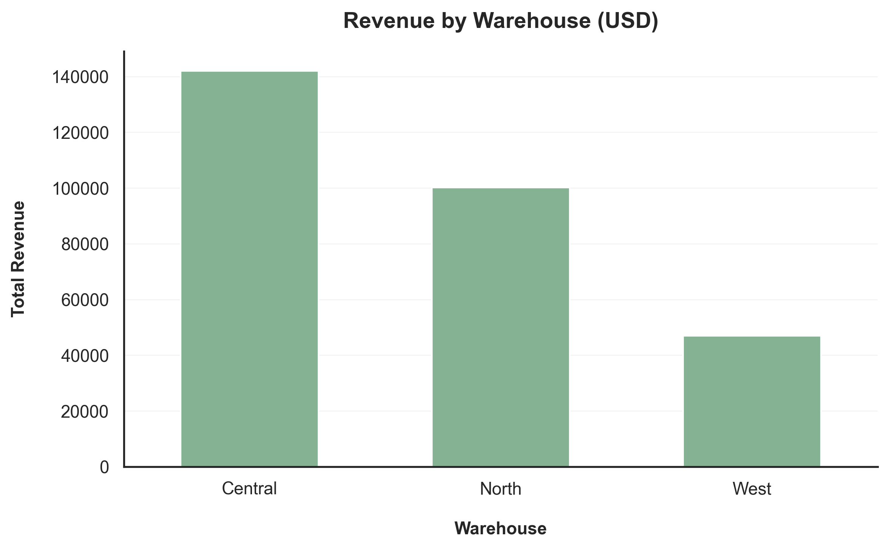
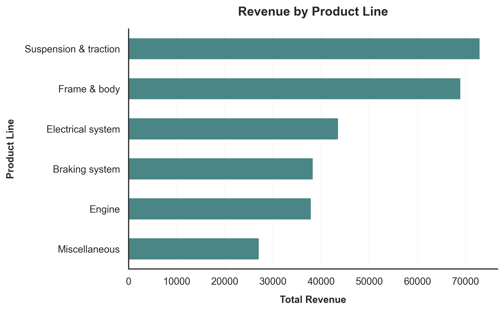
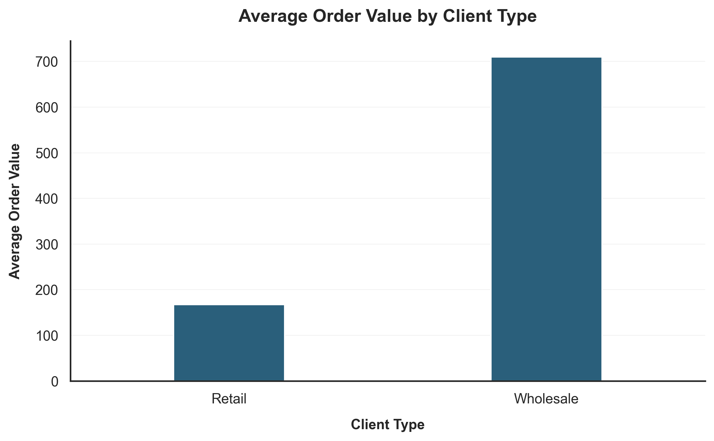

Revenue Analysis of a Parts Distribution Business
Exploratory analysis of order-level transaction data to identify the key drivers behind revenue performance in a wholesale parts distribution business.
Business Problem
A parts distribution company wants to better understand what factors drive revenue across its operations. The company sells multiple categories of automotive components through several warehouses and serves both retail and wholesale buyers.
Management wants to identify the key drivers behind revenue performance across operations, products, and customer segments.
The analysis focuses on four questions:
- Which warehouses contribute the most to total revenue?
- How is revenue distributed across product lines?
- How different are retail and wholesale purchasing patterns?
- What explains large order values: higher prices or larger quantities?
Key Insights
i. Revenue Is Concentrated in Two Warehouses

Sales are primarily generated by the Central and North warehouses, which produce the majority of company revenue. While Central leads overall (around $142K), North is not far behind at roughly $100K. In contrast, the West warehouse contributes less than half of North’s revenue, indicating that operational activity is largely concentrated in two locations.
ii. A Small Number of Product Lines Generate Most Revenue

Revenue is heavily skewed toward Suspension & Traction and Frame & Body components. Together these two categories generate a large share of total sales, while categories such as Electrical System, Braking System, and Engine contribute moderate amounts and Miscellaneous products account for the smallest portion.
This indicates that demand is concentrated in a few product segments rather than evenly distributed across the portfolio.
iii. Wholesale Customers Drive the Largest Transactions

Wholesale orders are significantly larger than retail purchases. On average, wholesale transactions exceed $700 while retail orders average closer to $165. This gap suggests that high-value sales are driven primarily by wholesale buyers rather than retail transactions.
iv. Higher Order Values Are Driven by Product Pricing Rather Than Order Size

The relationship between unit price and order total shows that higher-value products naturally produce larger order totals. Lower-priced components cluster in the $10–$25 range, while higher-value products like engines fall closer to $55–$65.
Most orders remain relatively small, but occasional bulk purchases push totals above $1,000. These spikes likely reflect bulk purchasing behavior rather than unusually high prices per item.
Business Implications
- Revenue distribution across warehouses suggests the company operates around two main fulfillment centers (Central and North) rather than a single dominant location. The much lower performance of the West warehouse may indicate either a smaller regional market or underutilized capacity, which could affect decisions about inventory allocation and logistics planning.
- Product demand is highly concentrated in Suspension & Traction and Frame & Body components. Because these two categories account for over half of total product revenue, supply chain disruptions or demand shifts in these areas could significantly impact overall sales performance.
- Wholesale customers represent the largest source of revenue per transaction, with orders averaging more than four times the value of retail purchases. This means that maintaining strong relationships with wholesale buyers is critical for sustaining high revenue levels.
- Because higher-priced products naturally generate larger order values, changes in product mix toward premium categories could materially increase revenue even without increasing order volume.
Recommendations
- Continue prioritizing operational efficiency and inventory availability at the Central and North warehouses, since these locations generate the majority of revenue.
- Evaluate the strategic role of the West warehouse. If demand in that region is structurally lower, the company may consider repositioning it toward specialized inventory or regional distribution rather than treating it as a primary revenue center.
- Focus sales efforts and inventory management on Suspension & Traction and Frame & Body products, which together generate nearly $143K in revenue and represent the strongest demand segments.
- Strengthen wholesale customer relationships through targeted pricing agreements, loyalty programs, or bulk purchasing incentives, since wholesale buyers generate significantly larger transactions.
- Review product mix and pricing strategy to ensure the company maintains a strong offering across high-value product categories, particularly those with higher price tiers such as engines and structural components.
Project Repository
The full project repository includes the dataset, SQL queries, Python analysis scripts, and the visualizations used in this analysis.